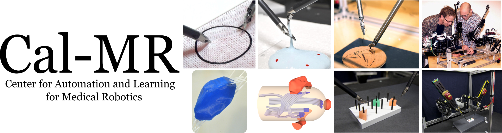

|  | |||||||
|
|||||||
Robot-Assisted SurgeryWe are developing algorithms and control methods to enable the automation of surgical subtasks such as tissue debridement, cutting, and suturing. This project integrates automatic planning algorithms, learning skills from demonstrations, robot control, and human in the loop guidance. This project has the potential to improve patient health by enhancing surgeon performance, reduce tedium and thus medical errors, and reduce costs by reducing operation time. The objective is to improve speed, accuracy, and precision of existing procedures and enable new classes of surgical procedures that require dexterity and control beyond the capability of a human operator. We are evaluating our techniques on a da Vinci robot (dVRK) donated by Intuitive Surgical. |
|||||||
Innovations in Radiation OncologyBrachytherapy is a widely-used treatment modality for fighting cancer in many parts of the body in which small radioactive sources are positioned proximal to cancerous tumors. Working with the Radiation Oncology team at UCSF, we have developed a series of dose planning algorithms and a novel method for robot-assisted insertion of “skew-line” needles. In current practice for intracavitary brachytherapy, standardized applicators with internal channels are inserted into body cavities to guide the sources. These standardized implants are prone to shifting inside the body, resulting in suboptimal dosages that might cause radiation damage to healthy organs and tissues. We are developing 3D printed customized implants (patent pending) containing customized curvature-constrained internal channels that fit securely, minimize air gaps, and precisely guide radioactive sources through printed channels and aim to significantly improve dose coverage and treatment options. |
|||||||
Steerable NeedlesThis project encompasses a decade of pioneering research into needles that can be steered from outside the body to reach internal targets for biopsy or to deliver treatment. This work integrates adaptive modeling and planning algorithms, and real-time image-guided intraoperative control of thin, flexible needles that move through deformable tissues around critical anatomical structures to reach specified targets. This project was funded under funded under a NIH R01 EB006435 grant and the steerable needle technology has been patented (US patent no. 7,822,458) and licensed. |
|||||||
Planned ProjectsCloud-Based Surgical Video Analysis for Evaluation and Training: The rising popularity of the use of minimally invasive surgical robots such as the Intuitive Surgical da Vinci robot in operating rooms (over 2000 such systems deployed worldwide) has created new opportunities to record videos of the surgical workspace and motions performed by the surgeon during surgery. This project will explore how large numbers of recordings can be analyzed in the Cloud for evaluating and training surgeons, producing quantitative measures of surgical proficiency, and for automatically annotating surgical recordings for training purposes. [In collaboration with Johns Hopkins University and Stanford University]. Cloud-Based Collaborative Robot Learning of Surgical Subtasks: The Cloud has the potential to facilitate collective learning across all such systems deployed worldwide in terms of sharing trajectories, control policies, and task execution outcomes. This project will explore how to leverage recorded data (vision, motion data) for learning how to better perform surgical subtasks such as tissue debridement, cutting, and suturing. In preliminary work, we have developed an approach that is able to perform such generalizations using non-rigid registration to find detailed correspondences between the demonstration environment and the new environment. This project will investigate how to efficiently index into this data to find demonstrations that best match the current situation using computational and data storage resources available in the Cloud. Human-in-the-Loop Robot Guidance: This project will investigate strategies for using expert human guidance and skills for annotating scenes and providing a high-level task description for surgical subtasks, analyzing, annotating and classifying video and motion data for learning surgical subtasks, and for facilitating error recovery during task execution. [In collaboration with Stanford University, John Hopkins University and University of Washington]. |
|||||||
| Cal-MR | 1169 Etcheverry Hall | Berkeley, CA |